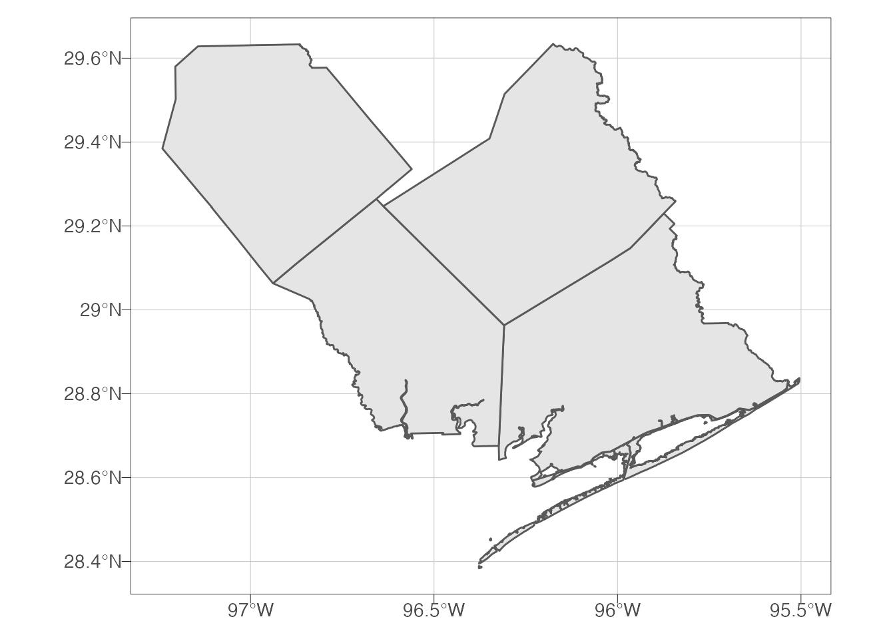
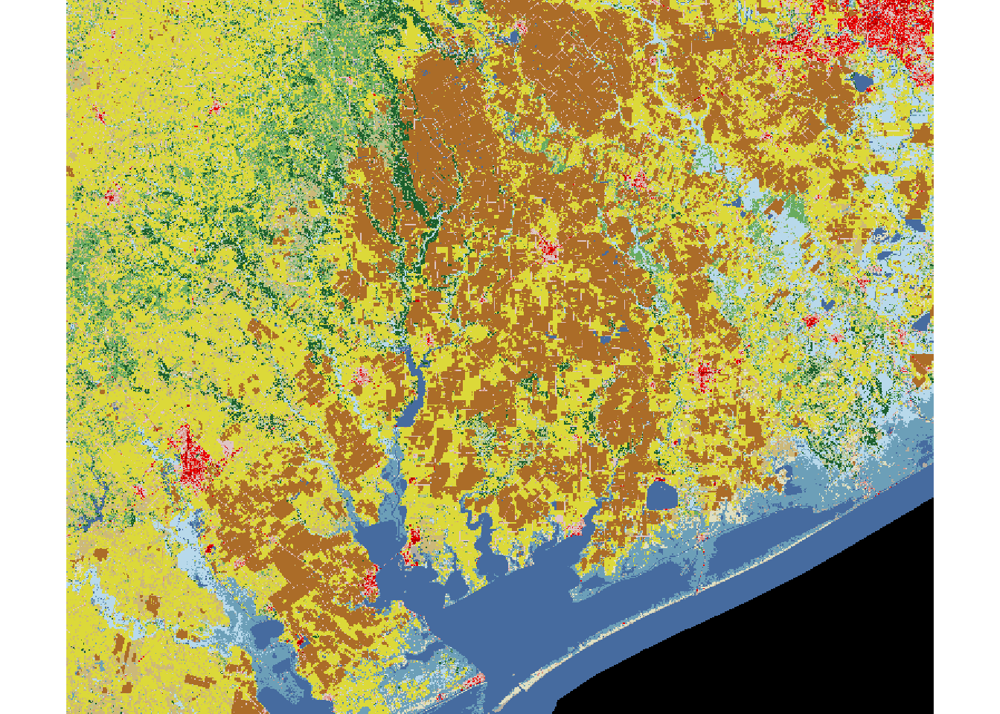

Load Data
We are going to download county geospatial files using data published by TxDOT on their ArcGIS servers (TxDOT – TPP – Data Management TPP-GIS@txdot.gov 2019). Then filter it down to a few counties of interest. We are also going to download the NLCD of the area of interest from federal data repos (Bocinsky 2020; Yang et al. 2018). Figures ?? and ?? but two different reference systems.
## download counties
counties <- read_sf("https://opendata.arcgis.com/datasets/8b902883539a416780440ef009b3f80f_0.geojson")
## reduce to 4 counties I am interested in
counties <- counties %>%
filter(CNTY_NM %in% c("Matagorda", "Wharton", "Jackson", "Lavaca"))
## download nlcd data using
## extent of the counties layer
NLCD <- get_nlcd(
template = counties,
year = 2016,
dataset = "Land_Cover",
label = "txnlcd",
force.redo = TRUE
)## Warning in showSRID(uprojargs, format = "PROJ", multiline = "NO"): Discarded
## ellps WGS 84 in CRS definition: +proj=merc +a=6378137 +b=6378137 +lat_ts=0
## +lon_0=0 +x_0=0 +y_0=0 +k=1 +units=m +nadgrids=@null +wktext +no_defs## Warning in showSRID(uprojargs, format = "PROJ", multiline = "NO"): Discarded
## datum WGS_1984 in CRS definitionggplot() +
geom_sf(data = counties) +
theme_ipsum_pub(axis_title_just = "c",
plot_margin = margin(10, 10, 10, 10),
ticks = TRUE) +
theme(panel.border = element_rect(color = "black",
fill = NA,
size = .25)) 
plot(NLCD)
References
Bocinsky, R. Kyle. 2020. FedData: Functions to Automate Downloading Geospatial Data Available from Several Federated Data Sources. https://CRAN.R-project.org/package=FedData.
TxDOT – TPP – Data Management TPP-GIS@txdot.gov. 2019. Texas County Boundaries Detailed. Texas Department of Transportation. https://services.arcgis.com/KTcxiTD9dsQw4r7Z/arcgis/rest/services/Texas_County_Boundaries_Detailed/FeatureServer.
Yang, Limin, Suming Jin, Patrick Danielson, Collin Homer, Leila Gass, Stacie M Bender, Adam Case, et al. 2018. “A New Generation of the United States National Land Cover Database: Requirements, Research Priorities, Design, and Implementation Strategies.” ISPRS Journal of Photogrammetry and Remote Sensing 146: 108–23.

Text and figures are licensed under a Creative Commons Attribution-ShareAlike 4.0 International License unless otherwise indicated.